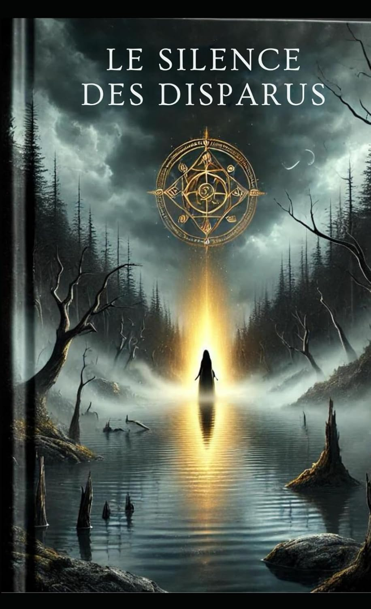
Le Silence des Disparus
Mystère / Thriller
Dans une petite ville bordée par un lac inquiétant, des disparitions inexpliquées
refont surface. Lucille, déterminée à comprendre ce qui se cache sous les eaux,
se lance dans une enquête où chaque indice révèle des secrets anciens.
Entre atmosphère oppressante et révélations troublantes, la vérité pourrait
être bien plus sombre que prévu.
Voir sur Amazon
La bibliothèque perdue de l'alchimiste
Mystère / Historique / Aventure
Au cœur du Moyen Âge, la disparition d’une reine plonge les royaumes dans le chaos.
Chargé de percer ce mystère, un marchand de reliques aux méthodes troubles découvre
un secret lié à un manuscrit maudit convoité pour son pouvoir. Entre complots, alchimie
et forces obscures, une quête dangereuse s’engage.
Voir sur Amazon
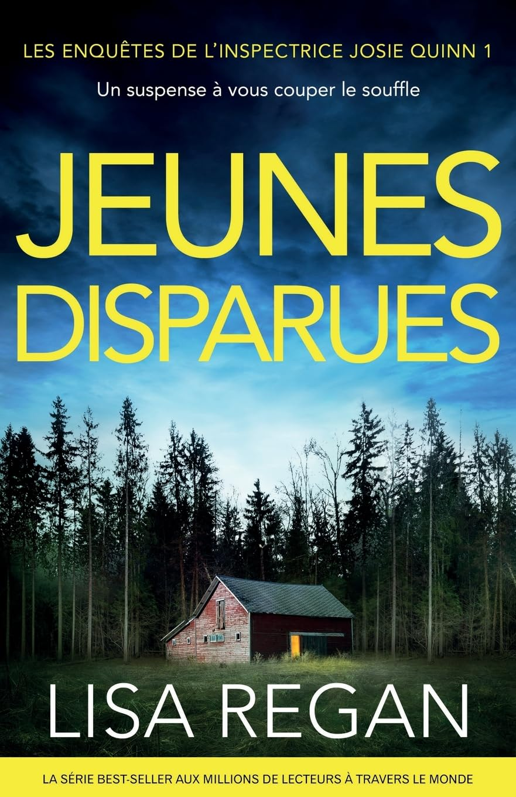
Jeunes disparues
Mystère / Thriller
Lorsqu’une jeune fille disparaît dans une petite ville en apparence tranquille,
l’inspectrice Josie Quinn découvre une affaire bien plus sombre qu’elle ne l’imaginait.
Entre victimes oubliées, secrets enfouis et danger imminent, une course contre la montre
s’engage pour empêcher de nouvelles disparitions.
Voir sur Amazon
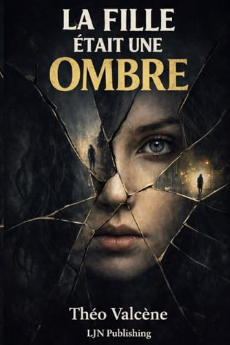
La fille était une ombre
Roman / Psychologique / Mystère
Lorsqu’une patiente troublante entre dans son cabinet, Evelyn sent que quelque chose ne tourne pas rond.
Entre silences inquiétants et souvenirs fragiles, une tension s’installe peu à peu.
Dans ce roman psychologique, vérité et illusion se confondent, révélant un jeu dangereux
où chaque identité pourrait être un mensonge.
Voir sur Amazon
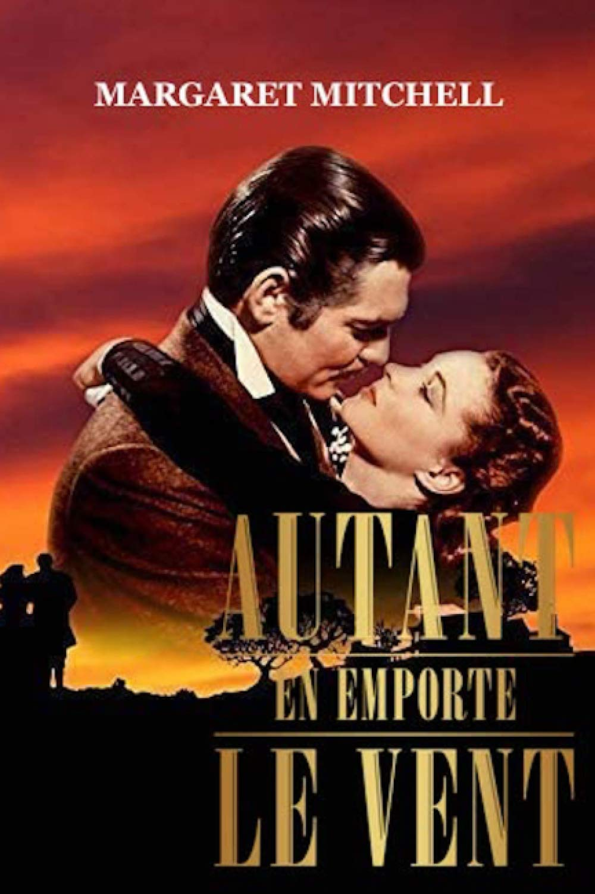
Autant en emporte le vent
Roman / Historique / Romance
Fresque monumentale sur fond de guerre de Sécession, ce roman suit le destin
de Scarlett O’Hara, jeune femme déterminée à survivre dans un monde en ruine.
Entre passion, ambition et tragédie, son histoire d’amour avec Rhett Butler
est devenue l’une des plus marquantes de la littérature.
Voir sur Amazon
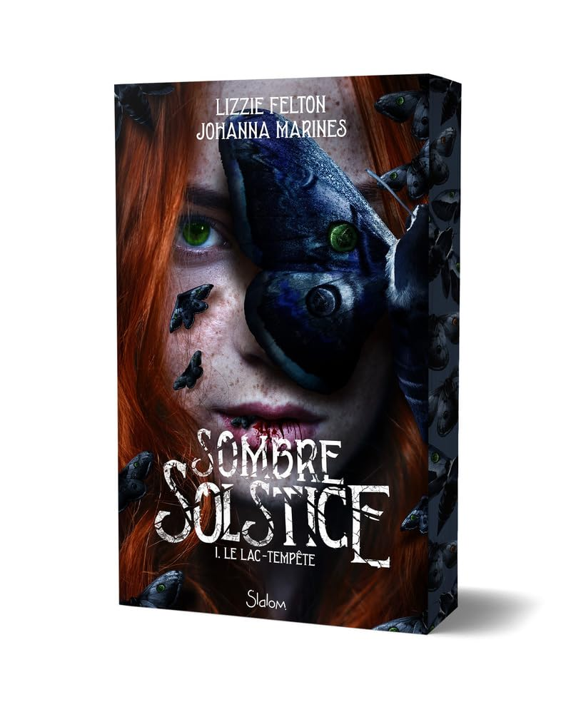
Sombre Solstice - Tome 1
Mystère / Thriller / Surnaturel
Lors d’un voyage entre amis, une randonnée tourne au cauchemar lorsqu’ils découvrent
un lac inexistant sur les cartes et un village abandonné qui semble s’animer la nuit.
Entre phénomènes étranges, tensions et secrets, une atmosphère sombre s’installe à
l’approche du solstice, où la frontière entre réalité et horreur disparaît peu à peu.
Voir sur Amazon
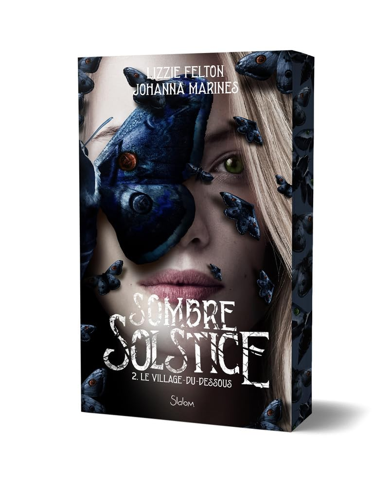
Sombre Solstice - Tome 2
Mystère / Thriller / Surnaturel
Piégés dans un cauchemar qui ne cesse de s’intensifier, Joshua et ses amis
comprennent que le lac-tempête n’était que le début. Entre visions troublantes,
secrets du village et forces obscures liées au solstice, ils doivent percer la vérité
avant qu’il ne soit trop tard.
Voir sur Amazon
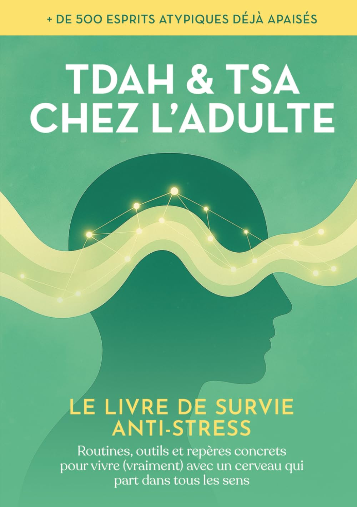
TDAH & TSA chez l’adulte : Le livre de survie anti-stress
Guide / Développement personnel
Un guide concret et accessible pensé pour les adultes neuroatypiques.
Il propose des routines simples, des outils pratiques et des stratégies
pour mieux gérer le stress, la charge mentale et l’organisation au quotidien,
sans méthodes complexes ni irréalistes.
Voir sur Amazon
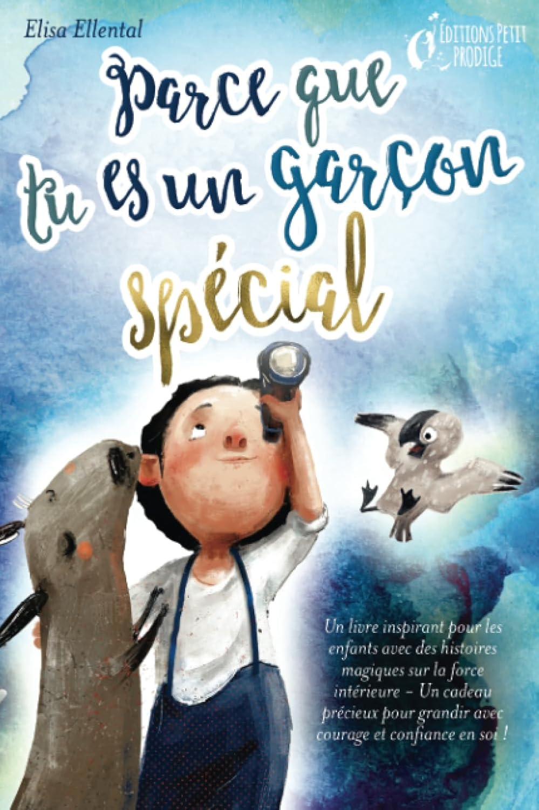
Parce que tu es un garçon spécial
Jeunesse / Développement personnel
Un livre positif et encourageant qui aide les jeunes garçons à croire en eux,
à développer leur confiance et à reconnaître leur valeur. À travers des messages
inspirants et bienveillants, il rappelle que chacun possède une force unique
et la capacité de grandir avec courage.
Voir sur Amazon
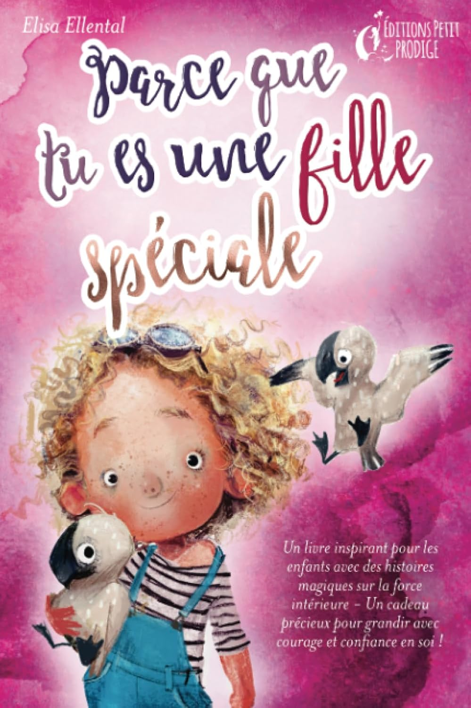
Parce que tu es une fille spéciale
Jeunesse / Développement personnel
Un livre inspirant qui aide les jeunes filles à prendre confiance en elles,
à surmonter leurs peurs et à croire en leur valeur. À travers des histoires
positives et motivantes, il rappelle que chacune est unique et capable
d’accomplir de grandes choses.
Voir sur Amazon
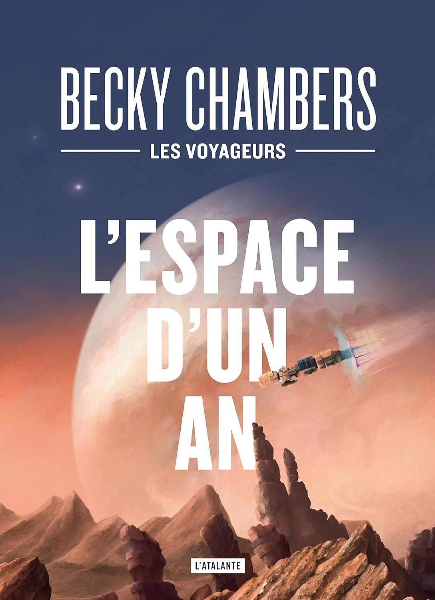
L'Espace d'un an – Les Voyageurs
Science-fiction
À bord d’un vaisseau creusant des tunnels dans l’espace, une jeune recrue découvre
un équipage aussi étrange qu’attachant, composé de multiples espèces venues de toute la galaxie.
Entre voyages, rencontres et secrets, cette aventure explore les liens humains, l’identité
et la vie en communauté dans un univers riche et profondément humain.
Voir sur Amazon
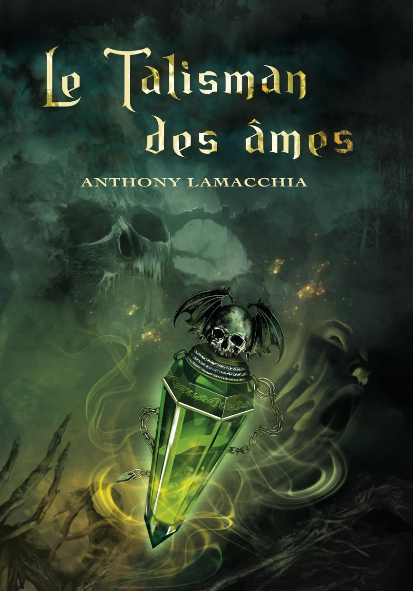
Le Talisman des âmes
Fantasy / Aventure
Après l’assassinat d’une princesse, un chevalier se lance dans une quête
interdite pour découvrir la vérité. Grâce à un talisman capable de ramener
les âmes des morts, il plonge dans un monde sombre où complots, magie et
esprits oubliés menacent l’équilibre du royaume.
Voir sur Amazon
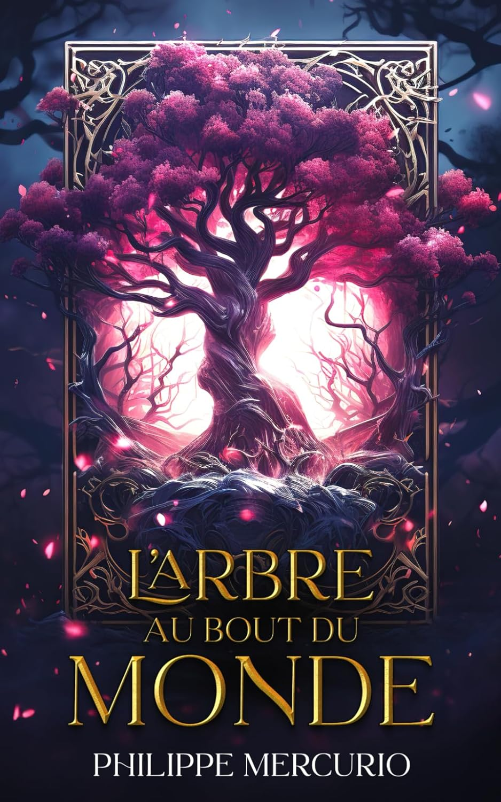
L'Arbre Au Bout Du Monde
Fantasy / Aventure
Au-delà des terres connues, un arbre mythique se dresse aux frontières du monde.
Attiré par les légendes qui l’entourent, un voyageur entame une quête périlleuse
où créatures anciennes, secrets oubliés et destin exceptionnel s’entrelacent.
Voir sur Amazon
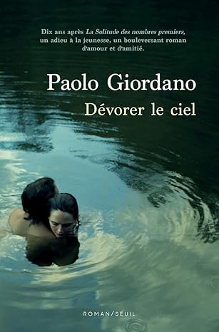
Dévorer le ciel
Roman
Un roman d’atmosphère sur la jeunesse, les idéaux et les amitiés
qui façonnent une vie. Une rencontre estivale bouleverse Teresa
et marque plusieurs années de choix, de passions et de désillusions.
Voir sur Amazon

Le Royaume des Ombres – Tenebräe
Fantasy
Dans un monde où les ténèbres gagnent du terrain, des forces anciennes
se réveillent et menacent l’équilibre des royaumes. Entre complots,
pouvoirs occultes et destin héroïque, une lutte s’engage dans l’ombre.
Voir sur Amazon

La femme de ménage voit tout
Roman
Un thriller domestique où une vie paisible se fissure peu à peu.
Dans une impasse tranquille, Millie commence à douter de ses voisins
lorsque d’étranges bruits se font entendre chaque nuit.
Voir sur Amazon
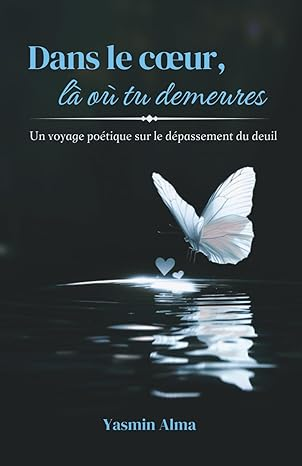
Dans le cœur, là où tu demeures
Roman
Un récit sensible sur les liens humains,
les souvenirs et les choix qui marquent
une vie. Une histoire intime portée
par les émotions et les rencontres.
Voir sur Amazon
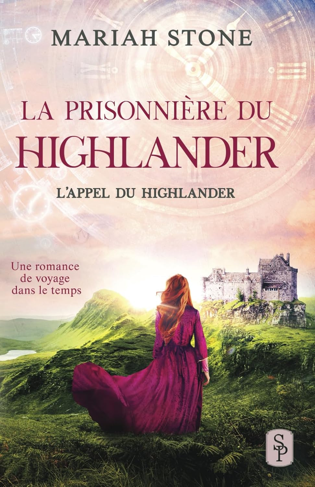
La Prisonnière du Highlander
Romance historique
Capturée dans l’Écosse des clans, une jeune femme voit
son destin bouleversé lorsqu’un redoutable highlander
entre dans sa vie. Entre danger, passion et loyauté,
leurs chemins pourraient bien se rejoindre.
Voir sur Amazon
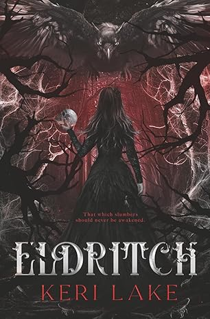
Eldritch
Fantasy sombre
Dans un monde où d’anciennes forces obscures
s’éveillent peu à peu, une femme se retrouve
liée à un pouvoir capable de réveiller des
créatures venues d’un autre âge.
Voir sur Amazon
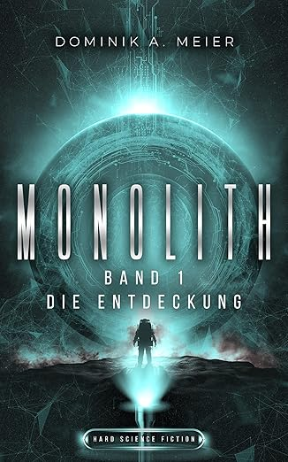
Monolith – La Découverte
Science-fiction
La découverte d’un mystérieux monolithe bouleverse
les certitudes scientifiques. Une expédition se lance
pour comprendre son origine et les secrets qu’il
pourrait révéler sur l’univers.
Voir sur Amazon
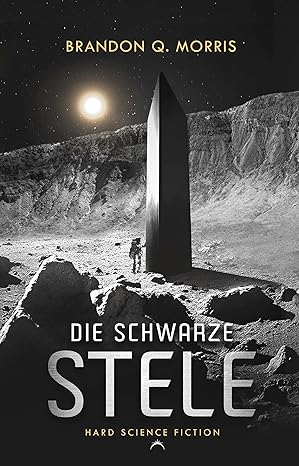
La Stèle Noire
Science-fiction
La découverte d’une étrange stèle noire intrigue
les scientifiques du monde entier. Une expédition
est envoyée pour comprendre son origine et les
mystères qu’elle pourrait révéler.
Voir sur Amazon
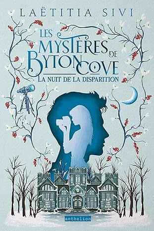
Les Mystères de Byton Cove
Mystère
Dans la petite ville côtière de Byton Cove,
une disparition mystérieuse bouleverse la
tranquillité apparente des habitants et
révèle des secrets longtemps cachés.
Voir sur Amazon
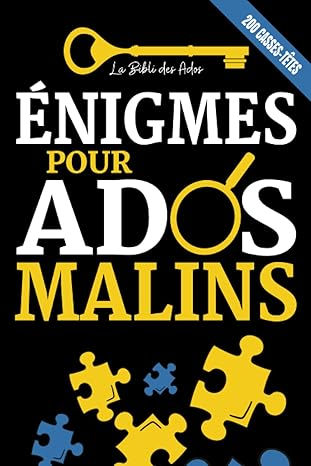
Énigmes pour Ados Malins
Jeunesse / Jeux
200 casse-têtes, enquêtes policières et jeux
de logique conçus pour stimuler l’esprit des
adolescents tout en s’amusant à résoudre
de nombreux mystères.
Voir sur Amazon
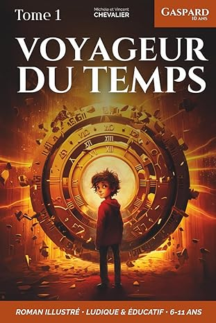
Gaspard, 10 ans, voyageur du temps
Jeunesse fantastique
À seulement dix ans, Gaspard découvre
un pouvoir incroyable : voyager dans le temps.
Chaque aventure l’entraîne vers des époques
et des mystères qu’il devra comprendre.
Voir sur Amazon
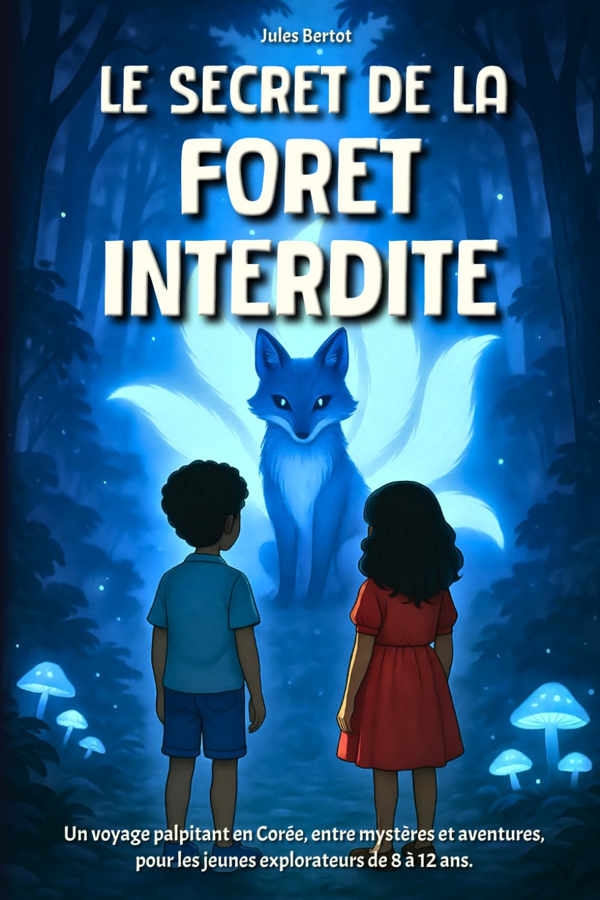
Le Secret de la Forêt Magique
Jeunesse fantastique
Au cœur d’une forêt mystérieuse,
un jeune héros découvre un secret
ancien qui pourrait réveiller des
forces oubliées depuis des siècles.
Voir sur Amazon
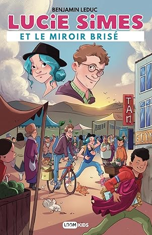
Lucie et le miroir brisé
Jeunesse fantastique
Lorsque Lucie découvre un miroir étrange,
un passage vers un monde fantastique
s’ouvre devant elle. Mais chaque secret
révélé pourrait changer son destin.
Voir sur Amazon

Juste après l’orage
Roman
Un récit touchant sur la résilience et la reconstruction après les tempêtes de la vie.
Entre émotions et espoir, ce roman explore la capacité humaine à se relever et à retrouver la lumière.
Voir sur Amazon

Le Potager, la bible pour débuter
Guide jardin
Un guide clair pour apprendre à créer
et entretenir un potager productif.
Idéal pour débuter et comprendre les
bases du jardinage naturel.
Voir sur Amazon
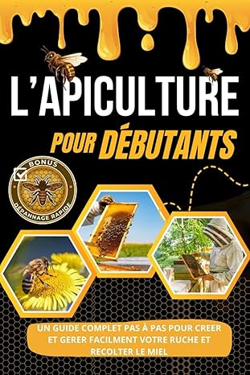
L’Apiculture pour débutants
Guide nature
Un guide pratique pour découvrir l’apiculture,
apprendre à installer ses premières ruches
et comprendre les bases de l’élevage des abeilles.
Voir sur Amazon
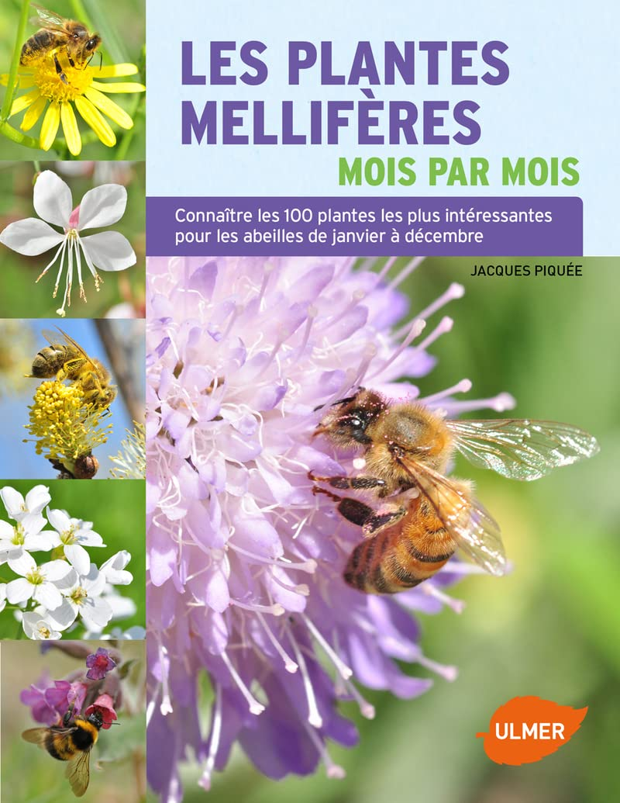
Plantes mellifères mois par mois
Guide jardin
Un guide pratique pour choisir les plantes
qui nourrissent les abeilles tout au long
de l’année et créer un jardin favorable
à la biodiversité.
Voir sur Amazon
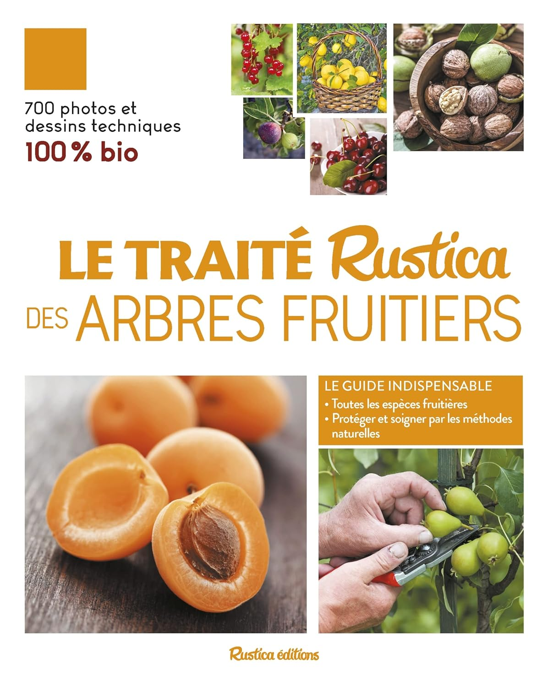
Le traité Rustica des arbres fruitiers
Guide jardin
Un guide complet pour planter, tailler
et entretenir les arbres fruitiers.
Idéal pour créer un verger productif
et réussir ses récoltes au jardin.
Voir sur Amazon
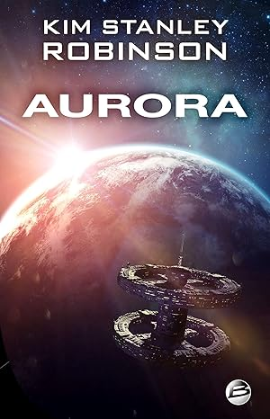
Aurora
Science-fiction
Un immense vaisseau transporte l’humanité vers une nouvelle planète.
Mais le voyage interstellaire révèle des défis inattendus.
Entre science, survie et espoir, l’avenir de la mission devient incertain.
Voir sur Amazon
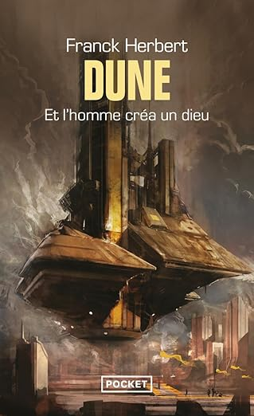
L’homme qui créa Dieu
Science-fiction
Dans un monde façonné par le pouvoir et la foi,
un homme se retrouve au cœur d’un destin capable
de bouleverser l’équilibre d’un empire entier.
Voir sur Amazon
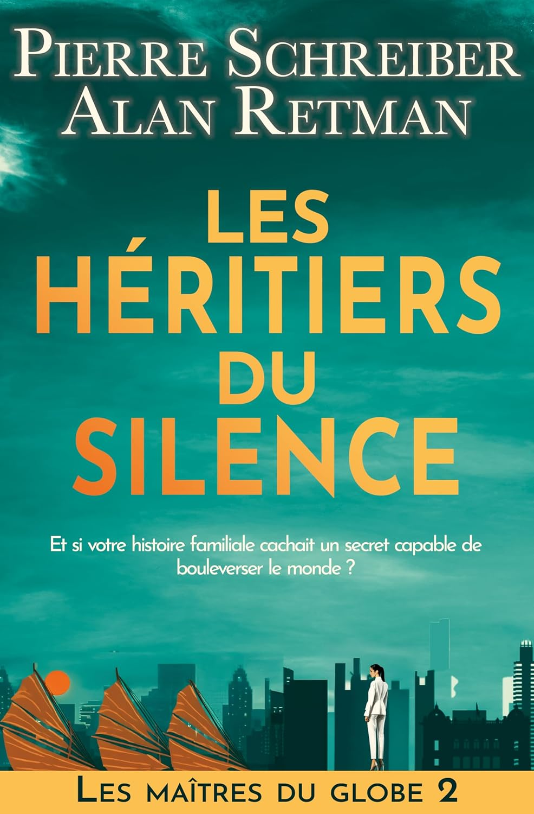
Les Héritiers du Silence
Thriller
Une enquête contemporaine qui plonge dans des secrets
enfouis depuis des générations. Entre mémoire, histoire
et révélations troublantes, la vérité pourrait tout changer.
Voir sur Amazon
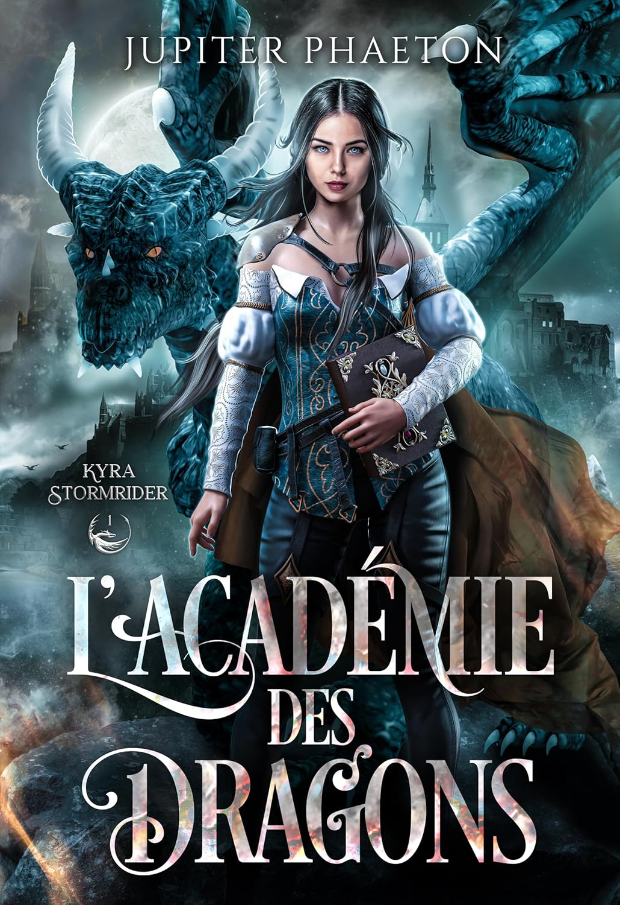
L'académie des dragons
Fantasy
Dans une académie où les jeunes guerriers apprennent
à maîtriser les dragons, une élève découvre que son
destin pourrait changer l’équilibre du royaume.
Voir sur Amazon
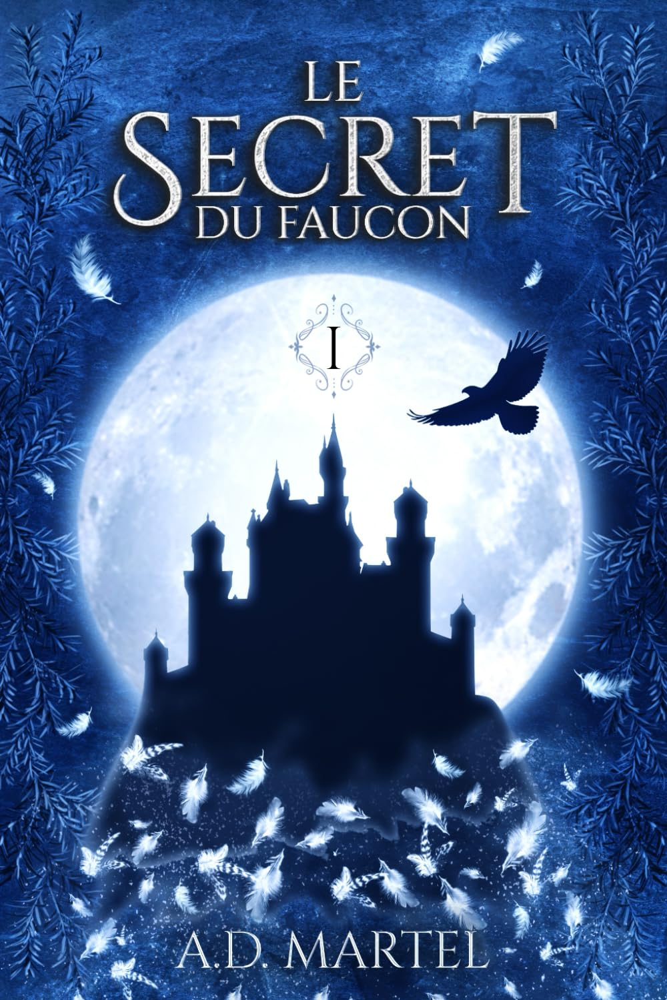
Le Secret du Faucon
Fantasy
Dans un royaume traversé par les intrigues et les
pouvoirs anciens, un jeune héros découvre un secret
capable de bouleverser l’équilibre des royaumes.
Voir sur Amazon
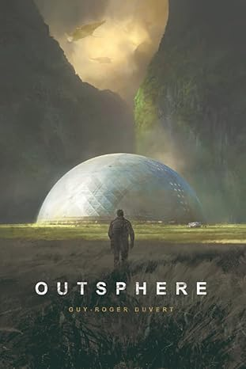
Outsphere
Aventure / Mystère
Dans un futur dominé par les technologies et les empires galactiques,
l’humanité explore les frontières de l’univers. Entre secrets,
conspirations et découvertes scientifiques, une mission pourrait
changer le destin de toute la civilisation.
Voir sur Amazon
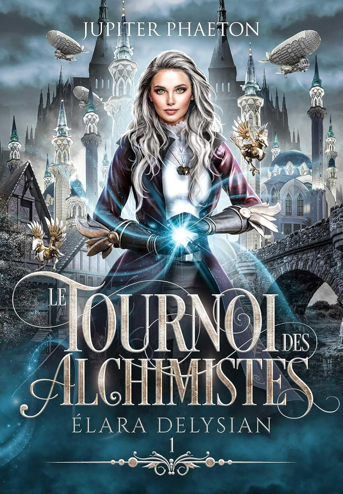
Le tournoi des alchimistes
Fantasy
Dans un royaume où la magie alchimique décide du pouvoir,
les meilleurs apprentis s’affrontent lors d’un tournoi
mystérieux qui pourrait changer le destin du monde.
Voir sur Amazon
Le Passager sans visage
Thriller
Une enquête étrange conduit une inspectrice au cœur
d’un mystère qui dépasse toute logique. Plus elle
avance, plus les révélations deviennent troublantes.
Voir sur Amazon